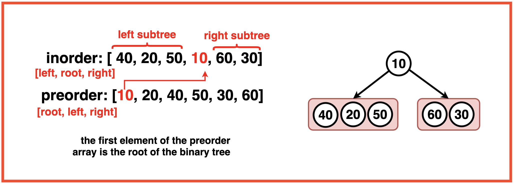
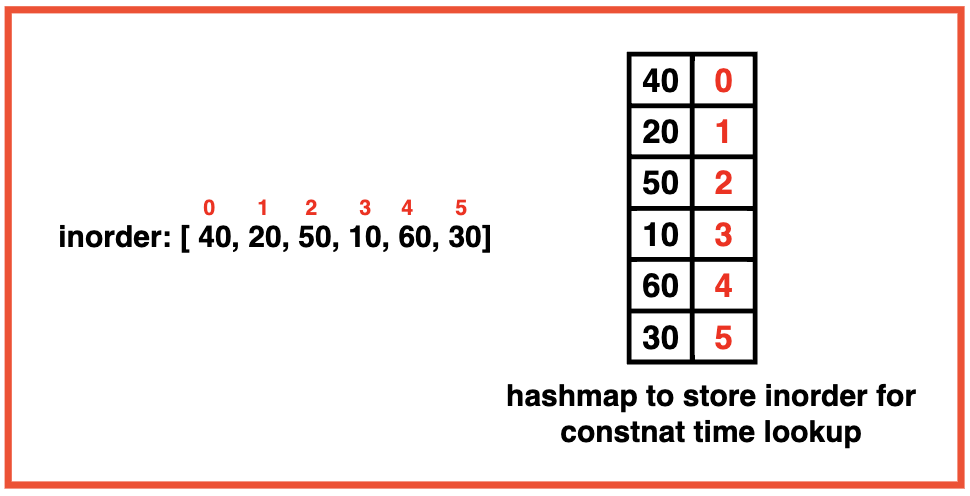
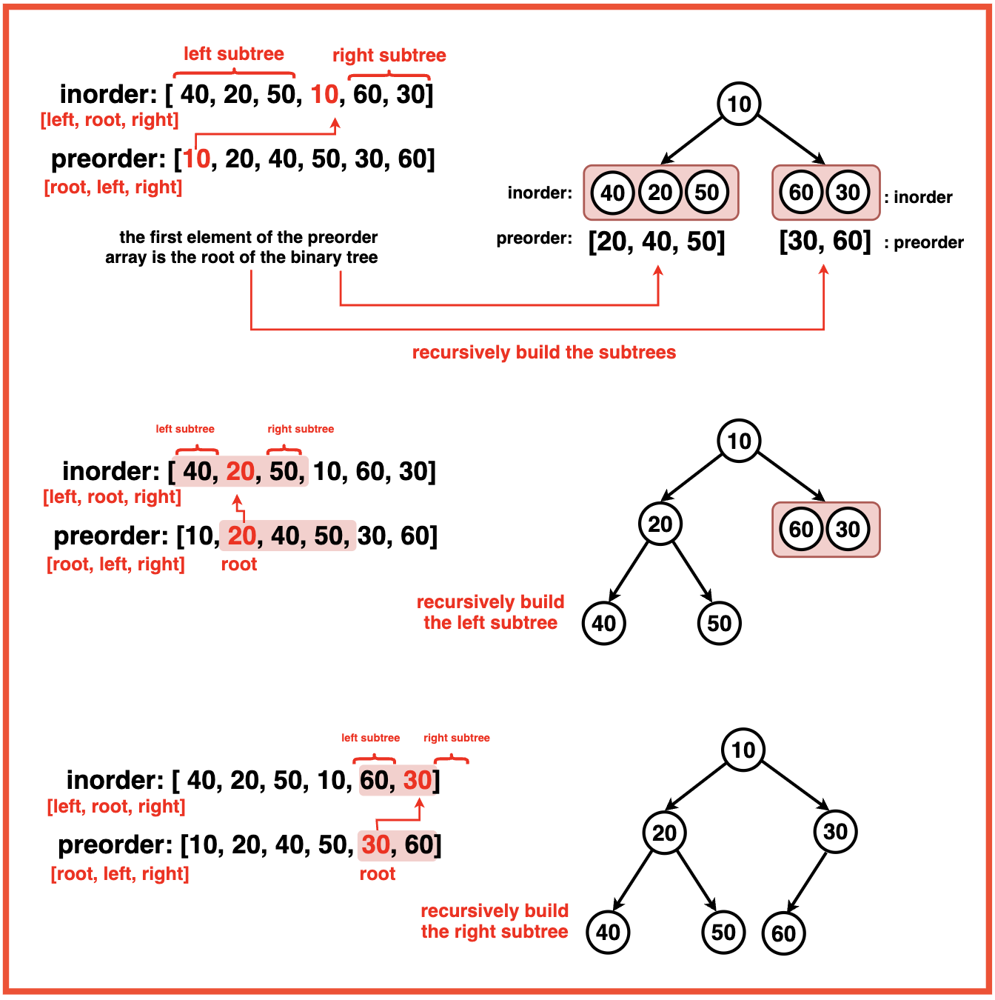

Disclaimer: Don’t jump directly to the solution, try it out
yourself first.
Optimal Approach
Algorithm / Intuition
Before we dive into the algorithm, it's essential to grasp the significance of inorder and preorder traversals. Inorder traversal allows us to identify a node and its left and right subtrees, while preorder traversal ensures we always encounter the root node first. Leveraging these properties, we can uniquely construct a binary tree.
The core of our approach lies in a recursive algorithm that creates one node at a time. We locate this root node in the inorder traversal, which splits the array into the left and right subtrees.

The inorder array keeps getting divided into left and subtrees hence to avoid unnecessary array duplication, we use variables (inStart, inEnd) and (preStart, preEnd) on the inorder and preorder array respectively.
These variables effectively define the boundaries of the current subtree within the original inorder and preorder traversals.
Everytime we encounter the root of a subtree via preorder traversal, we locate its position in the inorder array to get the left and right subtrees.
So to save complexity on the linear look up, we employ a hashmap to store the index of each element in the inorder traversal. This transforms the search operation into a constant-time lookup.
Algorithm:
Step 1:Create an empty map to store the indices of elements in the inorder traversal. Iterate through each element in the inorder traversal and store its index in the map (inMap) using the element as the key and its index as the value.

Step 2: Create a recursive helper function `buildTree` with the following parameters:
Preorder vector
Start index of preorder (preStart), initially set to 0
End index of preorder (preEnd), initially set to preorder.size() - 1.
Inorder vector
Start index of inorder (inStart), initially set to 0.
End index of inorder (inEnd), initially set to inorder.size() - 1.
Map for efficient root index lookup in the inorder traversal.
Step 3: Base Case:
Check if preStart is greater than preEnd or inStart is greater than inEnd. If true, return NULL, indicating an empty subtree/node.

Step 4:
The root node for the current subtree is the first element in the preorder traversal (preorder[preStart]).
Find the index of this root node in the inorder traversal using the map (inMap[rootValue]). This is the rootIndex.
Step 5:
Hence, the left subtree ranges from inStart to rootIndex. Subtracting these indexes gives us the leftSubtreeSize.
Step 6:
TMake two recursive calls to buildTree to build the left and right subtrees:
For the left subtree:
Update preStart to preStart + 1 (moving to the next element in preorder)
Update preEnd to preStart + leftSubtreeSize (end of left subtree in preorder)
Update inEnd to rootIndex - 1 (end of left subtree in inorder)
For the right subtree:
Update preStart to preStart + leftSubtreeSize + 1 (moving to the next element after the left subtree)
Update preEnd to the original preEnd (end of right subtree in preorder)
Update inStart to rootIndex + 1 (start of right subtree in inorder)
Step 7:
Return the root node constructed for the current subtree. The function returns the root of the entire binary tree constructed from the preorder and inorder traversals.
Code
#include <iostream>
#include <unordered_map>
#include <vector>
#include <queue>
#include <map>
using namespace std;
// TreeNode structure
struct TreeNode {
int val;
TreeNode *left;
TreeNode *right;
TreeNode(int x) : val(x), left(nullptr), right(nullptr) {}
};
class Solution {
public:
// Function to build a binary tree
// from preorder and inorder traversals
TreeNode* buildTree(vector<int>& preorder, vector<int>& inorder){
// Create a map to store indices
// of elements in the inorder traversal
map<int, int> inMap;
// Populate the map with indices
// of elements in the inorder traversal
for(int i = 0; i < inorder.size(); i++){
inMap[inorder[i]] = i;
}
// Call the private helper function
// to recursively build the tree
TreeNode* root = buildTree(preorder, 0, preorder.size()-1, inorder, 0, inorder.size()-1, inMap);
return root;
}
private:
// Recursive helper function to build the tree
TreeNode* buildTree(vector<int>& preorder, int preStart, int preEnd,
vector<int>& inorder, int inStart, int inEnd, map<int, int>& inMap){
// Base case: If the start indices
// exceed the end indices, return NULL
if(preStart > preEnd || inStart > inEnd){
return NULL;
}
// Create a new TreeNode with value
// at the current preorder index
TreeNode* root = new TreeNode(preorder[preStart]);
// Find the index of the current root
// value in the inorder traversal
int inRoot = inMap[root->val];
// Calculate the number of
// elements in the left subtree
int numsLeft = inRoot - inStart;
// Recursively build the left subtree
root->left = buildTree(preorder, preStart + 1, preStart + numsLeft,
inorder, inStart, inRoot - 1, inMap);
// Recursively build the right subtree
root->right = buildTree(preorder, preStart + numsLeft + 1, preEnd,
inorder, inRoot + 1, inEnd, inMap);
// Return the current root node
return root;
}
};
// Function to print the
// inorder traversal of a tree
void printInorder(TreeNode* root){
if(!root){
return;
}
printInorder(root->left);
cout << root->val << " ";
printInorder(root->right);
}
// Function to print the
// given vector
void printVector(vector<int>&vec){
for(int i = 0; i < vec.size(); i++){
cout << vec[i] << " ";
}
cout << endl;
}
int main() {
vector<int> inorder = {9, 3, 15, 20, 7};
vector<int> preorder = {3, 9, 20, 15, 7};
cout << "Inorder Vector: ";
printVector(inorder);
cout << "Preorder Vector: ";
printVector(preorder);
Solution sol;
TreeNode* root = sol.buildTree(preorder, inorder);
cout << "Inorder of Unique Binary Tree Created: "<< endl;
printInorder(root);
cout << endl;
return 0;
}
import java.util.HashMap;
import java.util.Map;
import java.util.Vector;
// TreeNode structure
class TreeNode {
int val;
TreeNode left;
TreeNode right;
public TreeNode(int x) {
val = x;
left = null;
right = null;
}
}
public class Solution {
// Function to build a binary tree
// from preorder and inorder traversals
public TreeNode buildTree(Vector<Integer> preorder, Vector<Integer> inorder) {
// Create a map to store indices
// of elements in the inorder traversal
Map<Integer, Integer> inMap = new HashMap<>();
// Populate the map with indices
// of elements in the inorder traversal
for (int i = 0; i < inorder.size(); i++) {
inMap.put(inorder.get(i), i);
}
// Call the private helper function
// to recursively build the tree
TreeNode root = buildTree(preorder, 0, preorder.size() - 1, inorder, 0, inorder.size() - 1, inMap);
return root;
}
// Recursive helper function to build the tree
private TreeNode buildTree(Vector<Integer> preorder, int preStart, int preEnd,
Vector<Integer> inorder, int inStart, int inEnd, Map<Integer, Integer> inMap) {
// Base case: If the start indices
// exceed the end indices, return null
if (preStart > preEnd || inStart > inEnd) {
return null;
}
// Create a new TreeNode with value
// at the current preorder index
TreeNode root = new TreeNode(preorder.get(preStart));
// Find the index of the current root
// value in the inorder traversal
int inRoot = inMap.get(root.val);
// Calculate the number of
// elements in the left subtree
int numsLeft = inRoot - inStart;
// Recursively build the left subtree
root.left = buildTree(preorder, preStart + 1, preStart + numsLeft,
inorder, inStart, inRoot - 1, inMap);
// Recursively build the right subtree
root.right = buildTree(preorder, preStart + numsLeft + 1, preEnd,
inorder, inRoot + 1, inEnd, inMap);
// Return the current root node
return root;
}
// Function to print the
// inorder traversal of a tree
private void printInorder(TreeNode root) {
if (root != null) {
printInorder(root.left);
System.out.print(root.val + " ");
printInorder(root.right);
}
}
// Function to print the
// given vector
private void printVector(Vector<Integer> vec) {
for (int i = 0; i < vec.size(); i++) {
System.out.print(vec.get(i) + " ");
}
System.out.println();
}
public static void main(String[] args) {
Vector<Integer> inorder = new Vector<>(java.util.Arrays.asList(9, 3, 15, 20, 7));
Vector<Integer> preorder = new Vector<>(java.util.Arrays.asList(3, 9, 20, 15, 7));
System.out.print("Inorder Vector: ");
new Solution().printVector(inorder);
System.out.print("Preorder Vector: ");
new Solution().printVector(preorder);
Solution sol = new Solution();
TreeNode root = sol.buildTree(preorder, inorder);
System.out.println("Inorder of Unique Binary Tree Created:");
sol.printInorder(root);
System.out.println();
}
}
from typing import List
# TreeNode class definition
class TreeNode:
def __init__(self, x):
self.val = x
self.left = None
self.right = None
class Solution:
def buildTree(self, preorder: List[int], inorder: List[int]) -> TreeNode:
# Create a map to store indices of elements in the inorder traversal
inMap = {val: idx for idx, val in enumerate(inorder)}
# Call the private helper function to recursively build the tree
root = self._buildTree(preorder, 0, len(preorder)-1, inorder, 0, len(inorder)-1, inMap)
return root
def _buildTree(self, preorder, preStart, preEnd, inorder, inStart, inEnd, inMap):
# Base case: If the start indices exceed the end indices, return None
if preStart > preEnd or inStart > inEnd:
return None
# Create a new TreeNode with value at the current preorder index
root = TreeNode(preorder[preStart])
# Find the index of the current root value in the inorder traversal
inRoot = inMap[root.val]
# Calculate the number of elements in the left subtree
numsLeft = inRoot - inStart
# Recursively build the left subtree
root.left = self._buildTree(preorder, preStart + 1, preStart + numsLeft,
inorder, inStart, inRoot - 1, inMap)
# Recursively build the right subtree
root.right = self._buildTree(preorder, preStart + numsLeft + 1, preEnd,
inorder, inRoot + 1, inEnd, inMap)
# Return the current root node
return root
# Function to print the inorder traversal of a tree
def printInorder(root):
if not root:
return
printInorder(root.left)
print(root.val, end=" ")
printInorder(root.right)
# Function to print the given list
def printList(lst):
for val in lst:
print(val, end=" ")
print()
# Main function
if __name__ == "__main__":
inorder = [9, 3, 15, 20, 7]
preorder = [3, 9, 20, 15, 7]
print("Inorder List: ", end="")
printList(inorder)
print("Preorder List: ", end="")
printList(preorder)
sol = Solution()
root = sol.buildTree(preorder, inorder)
print("Inorder of Unique Binary Tree Created:")
printInorder(root)
print()
// TreeNode structure
class TreeNode {
constructor(val) {
this.val = val;
this.left = null;
this.right = null;
}
}
class Solution {
// Function to build a binary tree
// from preorder and inorder traversals
buildTree(preorder, inorder) {
// Create a map to store indices
// of elements in the inorder traversal
const inMap = new Map();
// Populate the map with indices
// of elements in the inorder traversal
inorder.forEach((value, index) => {
inMap.set(value, index);
});
// Call the private helper function
// to recursively build the tree
const root = this.buildTreeHelper(preorder, 0, preorder.length - 1, inorder, 0, inorder.length - 1, inMap);
return root;
}
// Recursive helper function to build the tree
buildTreeHelper(preorder, preStart, preEnd, inorder, inStart, inEnd, inMap) {
// Base case: If the start indices
// exceed the end indices, return null
if (preStart > preEnd || inStart > inEnd) {
return null;
}
// Create a new TreeNode with value
// at the current preorder index
const root = new TreeNode(preorder[preStart]);
// Find the index of the current root
// value in the inorder traversal
const inRoot = inMap.get(root.val);
// Calculate the number of
// elements in the left subtree
const numsLeft = inRoot - inStart;
// Recursively build the left subtree
root.left = this.buildTreeHelper(preorder, preStart + 1, preStart + numsLeft, inorder, inStart, inRoot - 1, inMap);
// Recursively build the right subtree
root.right = this.buildTreeHelper(preorder, preStart + numsLeft + 1, preEnd, inorder, inRoot + 1, inEnd, inMap);
// Return the current root node
return root;
}
}
// Function to print the
// inorder traversal of a tree
function printInorder(root) {
if (!root) {
return;
}
printInorder(root.left);
console.log(root.val + " ");
printInorder(root.right);
}
// Function to print the
// given array
function printArray(arr) {
arr.forEach((value) => {
console.log(value + " ");
});
console.log();
}
// Main function
function main() {
const inorder = [9, 3, 15, 20, 7];
const preorder = [3, 9, 20, 15, 7];
console.log("Inorder Array: ");
printArray(inorder);
console.log("Preorder Array: ");
printArray(preorder);
const sol = new Solution();
const root = sol.buildTree(preorder, inorder);
console.log("Inorder of Unique Binary Tree Created: ");
printInorder(root);
console.log();
}
// Call the main function
main();
Time Complexity: O(N) where N is the number of nodes in the Binary Tree. This is because each node of the Binary Tree is visited once.
Space Complexity: O(N) where N is the number of nodes in the Binary Tree. The inorder hashmap to store the inorder array for fast lookup takes up space proportional to the input nodes.
An auxiliary stack space ~ O(H) where H is the height of the Binary Tree is used. This is the stack space used to build the tree recursively. In the case of a skewed tree, the height of the tree will be H ~ N hence the worst case auxiliary space is O(N).
Video Explanation
Special thanks to Gauri Tomar for contributing to this article on takeUforward. If you also wish to share your knowledge with the takeUforward fam, please check out this article